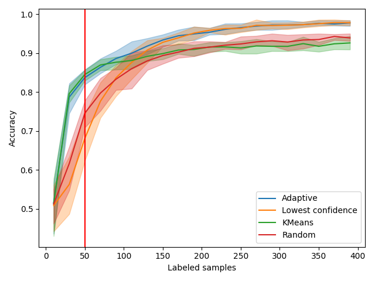
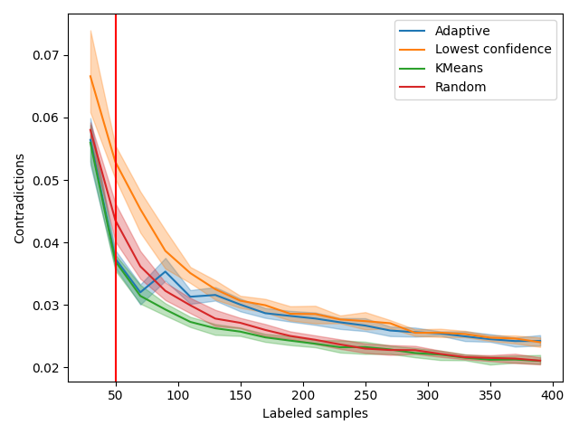

Note
Click here to download the full example code
Active Learning on Digit Recognition and Metrics¶
In this example, we run an experiment on real data and show how active learning can be monitored, given that in real life scenario there is no access to the ground truth of the test set. Based on these metrics, we identify two phases during this active learning experiment and define a custom query sampler that takes advantage of this.
Those are the necessary imports and initializations
from matplotlib import pyplot as plt
import numpy as np
from sklearn.datasets import load_digits
from sklearn.ensemble import RandomForestClassifier
from sklearn.model_selection import train_test_split
from sklearn.metrics import pairwise_distances
from cardinal.uncertainty import ConfidenceSampler
from cardinal.clustering import KMeansSampler
from cardinal.random import RandomSampler
from cardinal.plotting import plot_confidence_interval
from cardinal.base import BaseQuerySampler
np.random.seed(7)
The parameters of this experiment are:
batch_size is the number of samples that will be annotated and added to the training set at each iteration,
n_iter is the number of iterations in our simulation
We use the digits dataset and a RandomForestClassifier as model.
batch_size = 20
n_iter = 20
X, y = load_digits(return_X_y=True)
X /= 255.
model = RandomForestClassifier()
Experimental Metrics¶
We define a first metric based on contradictions. It has been observed that the number of samples on which the model changes his prediction from one iteration to the other is correlated to the improvement of accuracy. We want to verify this. Since the number of label prediction changes can be coarse, we use the absolute difference in prediction probabilities.
def compute_contradiction(previous_proba, current_proba, weights=None):
print(np.average(np.abs(current_proba - previous_proba).mean(axis=1), weights=None))
print(np.average(np.abs(current_proba - previous_proba).mean(axis=1), weights=weights))
return np.average(np.abs(current_proba - previous_proba).mean(axis=1), weights=weights)
We define a second metric based on the distance between already labeled samples and our test set. The goal of this metric is measure how well our test set has been explored by our query sampling method so far. We expect uncertainty sampling to explore the sample space located nearby the decision boundary and show poor exploration property.
def compute_exploration(X_selected, X_test):
return pairwise_distances(X_selected, X_test).mean()
def compute_exploration_2(X_selected, X_test):
return pairwise_distances(X_selected, X_test).min(axis=0).mean()
A New Custom Sampler¶
Let’s imagine what an ideal query sampler could look like by making the best of the samplers we already know. Uncertainty sampling is certainly an appealing method but in a previous example we have shown that it lacks exploration and can stay stuck in a local minimum for a while. On the other hand, K-Means sampling explore the space well but will probably fail at fine tuning our prediction model. In that context, it seems reasonable to first explore the sample space, say by using a KMeansSampler, and at some point shift to an exploitation mode where we fine tune our model using UncertaintySampler. We define an Adaptive Sampler that does exactly this.
As a heuristic, let us say that we keep exploring until we have explored 10% of our test set.
class AdaptiveQuerySampler(BaseQuerySampler):
def __init__(self, exploration_sampler, exploitation_sampler):
self.exploration_sampler = exploration_sampler
self.exploitation_sampler = exploitation_sampler
self._X_train_size = None
def fit(self, X_train, y_train):
self._X_train_size = X_train.shape[0]
self.exploration_sampler.fit(X_train, y_train)
self.exploitation_sampler.fit(X_train, y_train)
return self
def select_samples(self, X):
if self._X_train_size <= 50:
return self.exploration_sampler.select_samples(X)
else:
return self.exploitation_sampler.select_samples(X)
adaptive_sampler = AdaptiveQuerySampler(
KMeansSampler(batch_size), # Exploration
ConfidenceSampler(model, batch_size) # Exploitation
)
Core Active Learning Experiment¶
We now perform the experiment. We compare our adaptive model to random, pure exploration, and pure exploitation. We also monitor the metrics defined above.
samplers = [
('Adaptive', adaptive_sampler),
('Lowest confidence', ConfidenceSampler(model, batch_size)),
('KMeans', KMeansSampler(batch_size)),
('Random', RandomSampler(batch_size)),
]
figure_accuracies = plt.figure().number
figure_contradictions = plt.figure().number
figure_explorations = plt.figure().number
for i, (sampler_name, sampler) in enumerate(samplers):
all_accuracies = []
all_contradictions = []
all_explorations = []
for k in range(10):
X_train, X_test, y_train, y_test = \
train_test_split(X, y, test_size=500, random_state=k)
accuracies = []
contradictions = []
explorations = []
previous_proba = None
# For simplicity, we start with one sample of each class
_, selected = np.unique(y_train, return_index=True)
# We use binary masks to simplify some operations
mask = np.zeros(X_train.shape[0], dtype=bool)
indices = np.arange(X_train.shape[0])
mask[selected] = True
# The classic active learning loop
for j in range(n_iter):
model.fit(X_train[mask], y_train[mask])
# Record metrics
accuracies.append(model.score(X_test, y_test))
explorations.append(compute_exploration(X_train[mask], X_test))
# Contradictions depend on the previous iteration
current_proba = model.predict_proba(X_test)
ddd = 1/pairwise_distances(X_train[mask], X_test).mean(axis=0)
print(ddd.min(), ddd.max())
if previous_proba is not None:
contradictions.append(compute_contradiction(
previous_proba, current_proba, weights=ddd ** 2))
previous_proba = current_proba
sampler.fit(X_train[mask], y_train[mask])
selected = sampler.select_samples(X_train[~mask])
mask[indices[~mask][selected]] = True
all_accuracies.append(accuracies)
all_explorations.append(explorations)
all_contradictions.append(contradictions)
x_data = np.arange(10, batch_size * (n_iter - 1) + 11, batch_size)
plt.figure(figure_accuracies)
plot_confidence_interval(x_data, all_accuracies, label=sampler_name)
plt.figure(figure_contradictions)
plot_confidence_interval(x_data[1:], all_contradictions,
label=sampler_name)
plt.figure(figure_explorations)
plot_confidence_interval(x_data, all_explorations, label=sampler_name)
plt.figure(figure_accuracies)
plt.xlabel('Labeled samples')
plt.ylabel('Accuracy')
plt.gca().axvline(50, color='r')
plt.legend()
plt.tight_layout()
plt.figure(figure_contradictions)
plt.xlabel('Labeled samples')
plt.ylabel('Contradictions')
plt.gca().axvline(50, color='r')
plt.legend()
plt.tight_layout()
plt.figure(figure_explorations)
plt.xlabel('Labeled samples')
plt.ylabel('Exploration score')
plt.gca().axvline(50, color='r')
plt.legend()
plt.tight_layout()
plt.show()
- 
- 

Out:
4.239041224340544 6.1221664208924516
4.354926589396968 6.11861335016317
0.05968
0.05939614452366949
4.321525572405924 6.118572697573706
0.036212
0.036135181869435436
4.362496362551871 6.149994925826477
0.032212000000000005
0.0324644552459127
4.398664791468165 6.189664797901907
0.0367
0.03699798829279557
4.420081747471762 6.121905845841741
0.032292
0.03217278194814492
4.389603416724942 6.1339626347440515
0.031548
0.03152687914836198
4.419247271560423 6.066482024684051
0.028932000000000003
0.02896331286492236
4.39962304092852 6.0735626460681695
0.030032000000000003
0.030068408253396604
4.412325594177969 6.091517551245801
0.028828000000000003
0.028926044178643313
4.389002069868805 6.0808672834774615
0.0284
0.02847043021500048
4.381489725341028 6.071300904952849
0.027348000000000004
0.027432495569888863
4.391954395391362 6.083380499583327
0.026284000000000002
0.02633163907065544
4.393709092638567 6.071638297801204
0.026136000000000003
0.026156772832508245
4.39524592244076 6.064206971140154
0.024996
0.025028433862629554
4.399623821781451 6.0534914896858085
0.026216
0.02621585393275223
4.403254555575986 6.066083085583384
0.025636000000000003
0.025747123746039213
4.395697372822557 6.07386035126822
0.024392000000000004
0.024415004444652257
4.402511710754817 6.068383973961498
0.02428
0.024331368729710656
4.4103301000851 6.06291574080697
0.023996000000000003
0.02405107413207664
4.578304729245902 6.332797827087342
4.5890116246037875 6.147998816026847
0.060320000000000006
0.060419542299651546
4.5814782892531385 6.165138198743531
0.037348
0.03730303561171753
4.588820000741677 6.1544413212227305
0.031496
0.0316112743463235
4.545727124642538 6.198588704692311
0.03378400000000001
0.034129146096609504
4.488465849341462 6.065682195906766
0.030816000000000003
0.030770265022607223
4.472015082999257 6.052359285114854
0.031136000000000004
0.031129606356462777
4.5093085472218 6.01806069683695
0.029296
0.02932204785953667
4.507003930294721 5.97580206373173
0.028524
0.02868625161610836
4.5517428285626105 6.004680853700147
0.027276
0.027348088029332328
4.5419681795231135 5.984785122464323
0.026356
0.02630726731431681
4.550767405189838 5.9805023416591725
0.027360000000000002
0.027230369337847646
4.5594682304323015 6.012140162889348
0.026024000000000002
0.026029533544259506
4.546162690743629 6.009128157584546
0.025624
0.025606309182088994
4.54658318633376 6.007268897528817
0.026376000000000004
0.0262875376089446
4.558751896040327 6.027369121790351
0.025608000000000006
0.02574086032355947
4.569011094382804 6.031588391319268
0.025496
0.025465165931080936
4.56678716965862 6.017273879811088
0.024380000000000002
0.024387310452212506
4.561222440154718 6.012199104742039
0.024756000000000004
0.02478654717636414
4.552289374531207 6.016318832082982
0.023808
0.02389016051835638
4.347587661073087 6.313327922723175
4.338434218914188 6.410011148477875
0.05549200000000001
0.05541364666006884
4.354065307611468 6.3601240179185305
0.03842
0.0384773211707922
4.372930849198356 6.338007443282312
0.032436000000000006
0.03236172570078307
4.397862163957682 6.38884582568713
0.037036
0.037357547543431756
4.432023663966484 6.241303385045477
0.03442
0.03424195130391093
4.441195393819843 6.2155415224950925
0.031972
0.03214810761311225
4.441448250283903 6.201419407508279
0.028944
0.028990428610101964
4.420074209250778 6.180941612778932
0.028360000000000003
0.028419585770744722
4.392908679757567 6.1900227795852665
0.028200000000000003
0.02805630744060123
4.385119155053821 6.161055375753041
0.02758
0.02749810554745749
4.401646611660243 6.169045075162439
0.026704000000000002
0.026743733902585675
4.4107812234929 6.150497142211377
0.027940000000000006
0.028030446918940962
4.417809215470017 6.167668891198952
0.024676000000000003
0.024660981977764406
4.420927893917644 6.1730177188241
0.024076
0.024071550904932137
4.423799330617119 6.175672642040275
0.025464
0.02555823853266798
4.424415996560287 6.170111747650372
0.024596000000000003
0.024630693618869187
4.417395429172559 6.192774323901675
0.024124000000000003
0.024177480455402425
4.420896975242475 6.201763883811745
0.022860000000000005
0.022848680846774064
4.429315632932009 6.200812449349067
0.023192
0.023194079241976143
4.372196745689703 6.264982824915595
4.520533290663688 6.32520878901361
0.051424000000000004
0.051339815096108375
4.542180512288275 6.277622749428429
0.037244
0.0373605065160036
4.545788909196009 6.287294603101256
0.03489199999999999
0.03473453636122405
4.668254322014761 6.176977036870929
0.03382
0.03411095107801052
4.622706492045651 6.123904341811565
0.030732000000000002
0.030719791176772423
4.601977004153128 6.0928722038496055
0.031236
0.03125748866809048
4.584945300862527 6.079629729520414
0.030899999999999997
0.03082297135538383
4.605299413060276 6.158712584178576
0.028300000000000006
0.028299156858048145
4.616633556240285 6.114207644539924
0.0279
0.02785070759084432
4.639324118293632 6.125512552767804
0.028788
0.028801076109911852
4.630468385630412 6.127515864622769
0.027232000000000003
0.0273113944484036
4.64960693126975 6.171405581897175
0.027440000000000006
0.027415832102611854
4.651602033824356 6.163594726931662
0.026264000000000003
0.02622417910809354
4.651149228883722 6.158700457282312
0.025368
0.025305277070664118
4.643105136483259 6.183672260136082
0.025160000000000005
0.02510259979948447
4.645831109652935 6.200889447251677
0.02618
0.026159646669583113
4.630821621950269 6.203817449477138
0.02542
0.025305377009048707
4.6384675300921545 6.18517082081574
0.024552
0.02455465392810302
4.637948648401779 6.196223164237337
0.023564
0.023546107415237213
4.491738512269816 5.916796520506354
4.53780221483168 6.162315386866639
0.056176000000000004
0.0559388867428842
4.538473207887663 6.178594852967685
0.036104
0.036175278040435646
4.540813377443665 6.195060783365256
0.029832
0.029984214522079954
4.513600588244879 6.064050637618466
0.038896
0.03916188982144339
4.504026837396373 5.992118414022051
0.030384
0.030328338845961606
4.477371674065752 6.012122319408692
0.032692
0.03275125250870597
4.456360688395809 6.022090888170445
0.030128
0.030111646430664402
4.454942269103775 6.031494463876822
0.027872000000000004
0.028002256554054573
4.461189148355614 6.011901083702628
0.030308000000000005
0.030292837291949877
4.45212639062937 6.030851763643783
0.027540000000000002
0.027602507253164307
4.463970922476879 6.067000363981817
0.02784
0.027902953577585203
4.472892618282901 6.089765156944096
0.026800000000000004
0.026767501376709045
4.4656418176060395 6.11314721517923
0.025040000000000003
0.025066227541348345
4.465623234888496 6.072747048220674
0.02518
0.02527644176774449
4.472448293588432 6.094162928810596
0.024928000000000006
0.02498022678809633
4.469025874375745 6.120144361703835
0.025160000000000005
0.025243515302824284
4.476842505995729 6.118871447848487
0.024900000000000002
0.024885140770171087
4.4764406838842135 6.12848984899609
0.023648000000000002
0.023733667574027954
4.47077771833261 6.1135697676450045
0.025352
0.02538517343329462
4.510237567368882 6.240572029937584
4.609703419541029 6.269267941862803
0.05249600000000001
0.05257799264424381
4.582534962029344 6.217792594129991
0.03582400000000001
0.035768862744854954
4.6004647369173055 6.230045494356345
0.032024000000000004
0.03199408931018672
4.572300745023192 6.2042766923189845
0.033292
0.033340815068119665
4.529979460650483 6.1724932435399715
0.031368
0.031318689745701254
4.563269447122942 6.21168139443914
0.030228
0.030291298284577835
4.561883068223553 6.137608181862341
0.03084
0.030955243054953497
4.5934586556630475 6.141071306121172
0.028304000000000003
0.028363585282472976
4.572308064336967 6.15871844303027
0.027264000000000004
0.027241437161571392
4.552738339571322 6.1431939195283345
0.028336000000000004
0.028381171545794052
4.559087987125251 6.122971051159224
0.026204
0.0261720861400513
4.571847025743384 6.157799303111026
0.025184000000000005
0.025301092644763167
4.579546690225085 6.194005315761217
0.027160000000000004
0.027315468000605397
4.56326200947751 6.179552704844964
0.025668000000000003
0.025617679845776186
4.563762699338201 6.18082106178714
0.025564
0.025597767677605576
4.5654970335822584 6.1565767120452985
0.024840000000000004
0.024802972978831255
4.567855636113189 6.142728924314464
0.023956
0.023940791373003797
4.550264616823819 6.1407428945324325
0.025060000000000002
0.02516718409343518
4.546441567124982 6.147226377747746
0.024484000000000006
0.02450692664131039
4.521426282288335 5.988231826767694
4.573064478613948 6.000244691823037
0.058692000000000015
0.058633286867750475
4.539693607334091 6.012048172290737
0.03822
0.03811101693600771
4.545386388211843 5.987608479670453
0.032184
0.03233749035490661
4.580760698452836 6.000872650932406
0.034992
0.03517691548167219
4.615987124857911 6.071124146331416
0.031039999999999998
0.031150578329201817
4.59999439725398 5.988171875409574
0.030852
0.03075250935910872
4.608483959405287 6.017067326122796
0.030771999999999997
0.03079364464480108
4.590367898535211 5.973507884616031
0.028916000000000004
0.0288130512832457
4.578337735339424 6.014319518825699
0.028484000000000006
0.028543110517650527
4.59746361963561 5.982186605117909
0.027596000000000002
0.02751121878842024
4.605437004492808 6.0301105409657385
0.0261
0.02609872076435077
4.594227195873075 6.000161078984763
0.026080000000000006
0.02612765312684286
4.590501254551747 6.012633660661214
0.025832
0.025981998620116933
4.606761848650298 5.970820451590857
0.026148000000000005
0.026009905011660416
4.598941229798209 5.948616242094185
0.025276000000000003
0.025206106168007145
4.59948206008608 5.980575123643338
0.024928000000000006
0.02494432610528442
4.589097324572459 5.997361289269823
0.025552
0.02562281037506104
4.589153994331854 5.990187029767309
0.024616000000000006
0.02463995473873338
4.59062986035373 5.980193500932612
0.023996000000000003
0.02404814403859
4.50839035245337 6.170830820217814
4.559383606588741 6.180816970457107
0.05639600000000001
0.0563478529901726
4.56852093232297 6.260744128316675
0.035836
0.03598242167105411
4.577838349186081 6.267036615070461
0.032976
0.03313387159212797
4.589612670131216 6.248088805043672
0.034808000000000006
0.03510162604714621
4.5657292255565505 6.239506525139923
0.0316
0.031621904006856535
4.5914990589111815 6.262572781688325
0.030624000000000002
0.030785217126922962
4.5946427205861795 6.1811027353571735
0.029548
0.02945370925923436
4.573675088426136 6.126627733180984
0.029384
0.029374613601860687
4.554510782149661 6.12522940764657
0.027992000000000003
0.028050741669994144
4.573259604805222 6.136752403930577
0.028056000000000005
0.02811743857361975
4.612617429328715 6.140171192061508
0.028104000000000004
0.02805625423163557
4.5974348818441975 6.138796299720356
0.02736
0.027370979917504413
4.575473380482482 6.179530121322336
0.025432000000000003
0.025506867833740194
4.565355027619144 6.176709211825955
0.025952000000000003
0.026024760016334737
4.575718902058847 6.1601957729257855
0.025528000000000006
0.025550644376893722
4.595457646187542 6.172290101426586
0.024772000000000002
0.024773441246694408
4.588604611056151 6.153948605655394
0.024204
0.024197973916735498
4.595799356241054 6.14475735831951
0.024588000000000002
0.024701161227067194
4.584408746474496 6.1545630484979075
0.025084000000000002
0.025155607107649143
4.410348311192091 6.2428320408212485
4.521583541747848 6.303248137091965
0.05440400000000001
0.054291442857541374
4.562059404710959 6.311366237730963
0.037492000000000004
0.03742262446107042
4.541768820939005 6.225711928161671
0.0316
0.031631463777897564
4.61367519308303 6.159713386632884
0.03388
0.0339490075872585
4.65645694865238 6.040509559838318
0.03218000000000001
0.032092067690607066
4.620773653182341 6.087121266917371
0.033732
0.03388227342929791
4.654088113869122 6.078300995797753
0.031652
0.03167076936441153
4.612290446761535 6.081851973519257
0.029388
0.029446208140944227
4.581911917191173 6.094500885795098
0.027996000000000004
0.027996223908368062
4.566160175268293 6.0787472035442045
0.028796000000000002
0.028812960678397292
4.586611202560798 6.081361636344859
0.027644000000000005
0.027716709042574953
4.591290131596022 6.124937515705476
0.025816000000000002
0.025877423012524284
4.59806721969901 6.096310161418639
0.026492000000000005
0.026469332483643308
4.59355823878398 6.046563936369572
0.027208000000000003
0.027258825520916994
4.597441498111331 6.055260483006671
0.025124000000000004
0.025188364582462503
4.594650635010255 6.096721413684271
0.024207999999999997
0.024274757492714422
4.596489402923928 6.108004854950234
0.024112
0.024126673991353202
4.596228972301761 6.122025958802147
0.024144000000000002
0.024143796466242522
4.594866668936527 6.133406886555712
0.024592000000000003
0.02458490427993094
4.624138318098906 6.324696925311566
4.587310996002384 6.206182512760389
0.06004800000000001
0.059861492579876566
4.544113778029393 6.2446404176997365
0.041228
0.04134857515145312
4.545867916375897 6.254136437662387
0.030032000000000003
0.0300849404841255
4.569553050349544 6.206159021875199
0.033972
0.03414111342278269
4.594126793381658 6.251272774202361
0.028707999999999997
0.028823884144076384
4.60003755344126 6.193275643626266
0.03158
0.031556014425331735
4.599061765866749 6.188157536145608
0.029624
0.029655693534775075
4.585152018221179 6.129561056689309
0.027416000000000003
0.027407370120185074
4.583722995501578 6.153150056860829
0.028180000000000004
0.028211251114004732
4.582368585663293 6.157587221247881
0.026784000000000002
0.026871850433912412
4.603346754695291 6.164846953534737
0.027568
0.027639658539099728
4.604865371266324 6.136197940999592
0.027892000000000004
0.027867286849270943
4.603872321775266 6.146606509454031
0.026108000000000003
0.026192090788299614
4.615374784847754 6.137636783290333
0.025556000000000002
0.025616721694902592
4.594259387779932 6.157400212736424
0.025268000000000002
0.02532572329310283
4.586322280714709 6.174525797133197
0.023840000000000004
0.023791306769959098
4.577591031667184 6.197825575484543
0.024104000000000004
0.024242571878315695
4.584724325940122 6.191891289141148
0.023392000000000003
0.023396036014482886
4.580157106899238 6.177284030538595
0.024124000000000007
0.024147268838197306
4.239041224340544 6.1221664208924516
4.331554685968357 6.120571684972337
0.064332
0.06539887902417306
4.370941371580516 6.012138990657304
0.04997200000000001
0.05093964897472905
4.4210216233295965 6.056579091474701
0.046468
0.04653085043164366
4.364058555224791 5.982614976576164
0.039032000000000004
0.03881433017241813
4.3358135760717555 5.938577169858475
0.035120000000000005
0.03495184992721544
4.346630040078763 5.959691364463501
0.03435600000000001
0.03438409180579876
4.3658139962678515 6.0424872908718905
0.031112
0.031295700931819014
4.367593648695159 5.96216349638093
0.031700000000000006
0.031511794231883654
4.363808546975303 5.995716660242614
0.029680000000000005
0.029729616606462488
4.365859057655313 6.014291105934816
0.027224000000000005
0.027352266836024694
4.377843936870219 6.012364945128824
0.027652
0.027736392406112788
4.380969433573532 6.041697138015941
0.027880000000000002
0.02783053699909069
4.386171465702515 6.042876294378749
0.027144000000000005
0.027244861110823252
4.3983507237523485 6.032116610658483
0.025524000000000005
0.02547518976809314
4.403281500579587 6.009567326415149
0.024640000000000002
0.024664409145094254
4.397180780298227 6.018168720635661
0.025464
0.025511396664848095
4.402271679480147 6.0132689931013585
0.024856000000000003
0.024918701797602114
4.39780484890511 6.017657222216629
0.024292
0.024335184991519113
4.391762178771985 6.034619271025303
0.023952
0.024049566230094875
4.578304729245902 6.332797827087342
4.389271466338398 7.200976991737909
0.06838000000000001
0.07283521686208344
4.383025567669878 6.131770071072046
0.055656000000000004
0.05471021410046499
4.510138996855687 6.02706221989692
0.048976000000000006
0.049260173794467496
4.585234514134549 5.936673358679964
0.04174800000000001
0.041787902824800896
4.5757151688694595 5.922863095477043
0.032064
0.0320451907129157
4.56800497168 5.922085978832293
0.030907999999999998
0.030868525034007346
4.551507679760784 5.887780019127436
0.029304000000000004
0.029233446634721424
4.552309952712578 5.891877749248175
0.028832
0.028843165972098447
4.5291816220409284 5.9056320949002306
0.027636000000000004
0.027615483234543485
4.54380271241945 5.919808282441897
0.026972000000000003
0.02703744449223314
4.542779572165079 5.914854496214656
0.027788000000000004
0.027862998429118522
4.550947467902963 5.9228115496027245
0.027036
0.027112318559395908
4.544524225617392 5.951866211497323
0.027052
0.027103181230582304
4.527766969087041 5.933469014096243
0.026088
0.026018057119420148
4.529519440926493 5.93682117383179
0.025428000000000003
0.02545792204521823
4.52600133994396 5.925968399092161
0.025716000000000003
0.025667609670004712
4.525477327122877 5.9365861347767535
0.025068000000000003
0.02509353944833169
4.524567794937521 5.942512409730797
0.024968000000000004
0.024969345042403317
4.529325163942645 5.96065268163792
0.023204
0.02331986044778774
4.347587661073087 6.313327922723175
4.460803237345295 6.535017739156661
0.07277199999999999
0.07358957932742928
4.329548412424255 6.546339676361988
0.04892000000000001
0.05192521745747205
4.373815144163871 6.069334065262301
0.042768
0.041884218123180945
4.438912064534722 5.912587077402271
0.036264000000000005
0.03597385656234395
4.4016887896736705 5.955549498106765
0.036144
0.03590114572486654
4.446598229874041 6.031915310129068
0.03334
0.03337897267147109
4.43787391266306 6.024640096361068
0.030628
0.030488596252372272
4.41665092593629 6.032348978818044
0.031072000000000002
0.030912222935298682
4.440762239405049 6.077506282405058
0.028548
0.028591957686262832
4.442803904881492 6.091252719948094
0.02828
0.028289648001062154
4.423010439262195 6.086742468371982
0.027396
0.027220939880505245
4.417630865602843 6.12908435777582
0.026064
0.0260365092238302
4.421160423459481 6.139639634266025
0.026296000000000007
0.02627588499901726
4.421437955682027 6.135771954953087
0.025132
0.025066275621087146
4.413502482849988 6.124406132108599
0.024892000000000004
0.024898426159693496
4.418049965361106 6.125299136675008
0.024588000000000002
0.02451816105433286
4.420609254896534 6.128042224858218
0.024268
0.02426883603412804
4.423864993826326 6.133154163565878
0.023512
0.023633866020143297
4.425497770556435 6.114939226051793
0.023988000000000002
0.023902966050065286
4.372196745689703 6.264982824915595
4.454564500430133 6.099104499018258
0.064256
0.06436549051637702
4.399432439259012 6.029636813740816
0.05370400000000001
0.055344519656352516
4.5093093000635145 5.978862323095528
0.046852000000000005
0.04668376008518502
4.511798257317151 5.9797744122829535
0.034764
0.034444620742770486
4.502856756229203 6.018155206617331
0.03348
0.03368484770145739
4.581789934187669 6.049071916450942
0.03384399999999999
0.033910529014826774
4.588935300620648 6.040148220454128
0.03118
0.031101180367455298
4.606902911757564 6.113348610700556
0.030472000000000003
0.030555211851666517
4.593363621191118 6.051166653353787
0.026708000000000003
0.026633297255704954
4.5961188079975015 6.062324099930665
0.028964000000000004
0.028855760080505312
4.6181096052626645 6.054943061494685
0.027708
0.027653379394553992
4.622843498011669 6.094859372124956
0.026272000000000007
0.026195817645871887
4.634232312615266 6.130676428569132
0.027536
0.027522878672197534
4.630256566978135 6.124130112543661
0.026868000000000003
0.026829232580454127
4.622495270986485 6.118638780249835
0.025240000000000002
0.02519020981019621
4.631592377411023 6.097242061970447
0.025752000000000004
0.025783300816942797
4.6241932641765695 6.08076847522483
0.025100000000000004
0.024996124846331957
4.634507743469539 6.124908220210525
0.025356
0.02527188040939868
4.637130451503681 6.136174039893891
0.022980000000000004
0.02297315311956275
4.491738512269816 5.916796520506354
4.341580933292045 6.3420866894305945
0.07599600000000001
0.07728710470219433
4.459908019861046 6.141275747285562
0.048268
0.04865442979225823
4.460054455817842 6.045346474667517
0.047828
0.04803208281162879
4.45540460985914 6.039781646340799
0.043752000000000006
0.04378152550097502
4.430248043102635 5.998465377065162
0.035064
0.03508408593830237
4.491750754044885 5.932951470904291
0.030944000000000003
0.03081511643351254
4.518525185548613 5.966806847707
0.030192
0.030336811786991012
4.499707311746512 5.953142546736491
0.028544
0.028598184034464787
4.527324506391515 5.956205000483895
0.028620000000000003
0.028792613510544626
4.509529932132868 5.969291024253752
0.026992000000000006
0.027065049861620446
4.481448755091709 6.008813227794646
0.027492000000000006
0.027542239677038116
4.481112845962791 6.011222925761885
0.027652000000000003
0.02777094061236416
4.48130426842632 6.035357153858675
0.027420000000000003
0.02747058351631899
4.490274008678274 6.065887958391927
0.025168000000000003
0.025189936080650205
4.490035939147699 6.105778432436222
0.026048
0.026103085934664864
4.480617849597659 6.083499046802442
0.025344000000000002
0.025311114791945755
4.474652481915595 6.096784987263947
0.024604000000000004
0.024626673295613882
4.466932098217092 6.089383004550884
0.024852
0.024968911325544265
4.467988898901331 6.096087016836946
0.023804000000000002
0.02389927531004499
4.510237567368882 6.240572029937584
4.53724620495387 6.198210776813474
0.061864
0.06262813600531707
4.434347604754433 6.077443499239941
0.04976800000000001
0.050350638167484155
4.480750635526783 6.03391257135972
0.04528
0.04509855386750885
4.513609790939007 6.049637236244304
0.037724
0.03759579846072366
4.53583348215435 5.938069459678248
0.037932
0.037725798573348776
4.560900492251741 5.970908467049318
0.032384
0.032286839120996384
4.573737975877021 5.975395134485291
0.031016000000000002
0.031071868317769938
4.574970919407655 5.989422502156126
0.030488
0.0305647624235947
4.560639711579836 5.978843685598507
0.028768000000000002
0.02870890302129656
4.542791261776106 6.007793561777377
0.029080000000000005
0.029170138771298412
4.561794362570556 6.008451507443001
0.028764
0.02870916162272085
4.570942622578767 6.0446932447435024
0.027868
0.028008629664641748
4.572677257943464 6.0581918933891385
0.028016000000000006
0.02811648404426341
4.568019428052384 6.050153939846993
0.02514
0.025099026816109968
4.553588741581134 6.087204539023849
0.027100000000000006
0.02708432484586492
4.557034672501246 6.073234667898726
0.026552000000000006
0.026573015988321905
4.548317594700206 6.072684643220352
0.024684000000000005
0.024709370056364678
4.549596090941588 6.104730841236368
0.023884000000000002
0.02388787631608785
4.543796835635338 6.115610647142036
0.023480000000000004
0.023437706568960593
4.521426282288335 5.988231826767694
4.480553425783445 6.202833689889588
0.060064000000000006
0.06069293299964896
4.511441124736476 6.334959101512942
0.052036
0.05294364294496223
4.519798252918574 6.230150230374746
0.043616
0.043759983584694614
4.593967011574903 6.027801299159797
0.038824000000000004
0.038477746114015714
4.619007482727321 6.034617032825148
0.035604
0.03575619869256454
4.565259638640288 5.942613494240047
0.03358
0.033441684600499594
4.576523221580359 5.922748168509529
0.03318000000000001
0.03308750067730564
4.561350584347563 5.933436401892362
0.029236
0.02925553709064001
4.603007107473562 6.00850506667024
0.027828000000000002
0.027964685044739562
4.593565990668518 5.978640096962494
0.029728
0.029732825613075987
4.568683779075232 5.979557261520153
0.028124000000000003
0.028180732676493424
4.535955152627386 5.955069260027839
0.029028
0.029042770524461116
4.537998930855021 5.96037794722483
0.026240000000000003
0.026292221710384492
4.5598026270181045 5.962337425056978
0.025744000000000003
0.025770772821379618
4.5791689155827475 5.954230061164426
0.025692
0.025691467974225012
4.5843514745128635 5.958824187003355
0.025032000000000002
0.02503099451682727
4.5839263631125275 5.982538973705107
0.024412000000000003
0.02451004383261868
4.588786405370315 5.9658249492147695
0.024836000000000004
0.024929696404463016
4.589351378963877 5.981144083211143
0.024640000000000002
0.024648990503833883
4.50839035245337 6.170830820217814
4.51645124968314 6.506678633520245
0.06022
0.06084185513024613
4.549903061013092 6.268295437526241
0.05516400000000001
0.055345495839310366
4.610091312612867 6.293675476586141
0.047912
0.047885655240228406
4.612810054510568 6.311977853007225
0.040456000000000006
0.04031150760774093
4.595600790957067 6.291559715332246
0.03535599999999999
0.03556295617532105
4.605583546145304 6.279575725951405
0.033656
0.03378133803556056
4.595214254148396 6.231405010821016
0.030112000000000003
0.029981616791296125
4.5832105682373685 6.1936249366960405
0.030556
0.030444422293403703
4.599548202391815 6.1631721633886505
0.028140000000000002
0.02809832974919307
4.5740474087910625 6.169603905767019
0.028707999999999997
0.02864991213979246
4.561460423351545 6.159893787179722
0.028
0.027941930761959017
4.550661608563043 6.137623436033494
0.028904
0.028841219481992125
4.588636054950191 6.121626249951888
0.02748
0.02742771256926542
4.6039581981842455 6.118892823876121
0.024908
0.02495732913021761
4.593991637864797 6.151462816220265
0.024860000000000007
0.025034085540067176
4.593485964466696 6.144442493567884
0.025408
0.025408226535739514
4.5936812310159105 6.16982442378375
0.025092000000000007
0.0251254733262219
4.596424540575509 6.180891885273559
0.025044
0.025103249168798993
4.5898156766118525 6.170928213628461
0.024292
0.02427438689319476
4.410348311192091 6.2428320408212485
4.498553551512571 6.163622341871221
0.06258
0.06294022087141353
4.587918461614933 6.148126476288714
0.05719200000000001
0.057216955456218785
4.654053743991447 6.124752091614599
0.038692000000000004
0.03876449875439375
4.63444034274749 6.042222004043033
0.037944000000000006
0.03752106381530286
4.611110904976658 5.917178737379464
0.035412000000000006
0.03518896135561448
4.608403306392172 5.9675502060296335
0.031236000000000003
0.03130266571093728
4.647568801193483 6.000772667105152
0.030652000000000006
0.030680378760497635
4.645634531036129 6.027746673045777
0.029336000000000004
0.029374650670431244
4.623913289239056 6.031918383935833
0.030444000000000002
0.03049425396787193
4.613266129855729 6.041497321219774
0.028228000000000003
0.02828052030348975
4.597046670339569 6.009911095929967
0.028232000000000004
0.02827959054628457
4.598808585060421 6.017777531244754
0.027184
0.027247350136290614
4.597840930465828 6.058954111286182
0.027208000000000006
0.027367379198651575
4.607382953658316 6.100776899441728
0.025560000000000003
0.02558376159196646
4.584188608409563 6.108190948929881
0.025708
0.025745742090799564
4.578016292755684 6.104448731182837
0.024912000000000004
0.024929773792485104
4.583384856506579 6.098075714180678
0.025304000000000004
0.025310258357428003
4.580850359922195 6.089831483415828
0.024900000000000002
0.024917804416660805
4.577324335678559 6.0687823106497065
0.026060000000000007
0.026146113441395776
4.624138318098906 6.324696925311566
4.513474585670389 6.5482748010242515
0.06437200000000001
0.06544942548930864
4.53478452656527 6.300038418079555
0.05136000000000001
0.05154621792839224
4.556408856358481 6.151372852872031
0.04560400000000001
0.04547728659635361
4.548625981557439 6.0728961449285315
0.03808
0.037954214313294675
4.459422088588317 6.000018286035981
0.03536400000000001
0.03517479889942433
4.486460508666774 6.004662468332334
0.031104
0.03112239579056349
4.523444801152414 5.9843153067108705
0.0296
0.02959003173042429
4.550524802611496 6.010126236315561
0.029764
0.029598502132058137
4.586920133367146 6.028382079228536
0.029232
0.02934261804236683
4.6015106541163995 6.03692104323098
0.031080000000000007
0.031184407386353773
4.590342402320814 6.079216192830121
0.025728
0.025739441766761097
4.574172575594416 6.065854288369929
0.02614
0.026104496055955474
4.562258273601527 6.05719070563189
0.026072
0.026036434084801698
4.57358756632928 6.051848305378363
0.025372000000000002
0.025472533949586203
4.576913958207595 6.066903567341417
0.025728
0.025872615088318302
4.571957904002532 6.0830533578053485
0.024824000000000006
0.024882700953511427
4.568319739841258 6.129276235446529
0.024088000000000002
0.02420684936051852
4.550718803118629 6.122800728707761
0.024404000000000002
0.024391882755975872
4.565169568766626 6.112078951735704
0.023884000000000002
0.023840573575594857
4.239041224340544 6.1221664208924516
4.356050328330115 6.0890685779916796
0.061648
0.06113680977825752
4.3268202991694595 6.028545507843145
0.036775999999999996
0.03681954996975761
4.34109803848917 6.087016228903548
0.030932
0.030964084227148938
4.34442343803877 6.138794959985714
0.028984000000000003
0.028993167221018204
4.343447402380961 6.170670628005325
0.027980000000000005
0.028040074710765608
4.344696831762675 6.155412523124937
0.027252000000000002
0.02739327689891613
4.351367181335488 6.180742481205522
0.026324000000000004
0.026386572651565698
4.34378043353544 6.180425202149785
0.026788000000000003
0.026859456919887878
4.343873465398944 6.178815520713516
0.024896000000000005
0.024928719875744437
4.344748906778054 6.169475056085999
0.024352000000000006
0.0243522512703148
4.334926529020649 6.191861836966937
0.024516000000000007
0.024607414782121577
4.332412081771202 6.182151385816017
0.024016000000000003
0.024103438872021942
4.333455133521289 6.176361875450193
0.023764000000000004
0.023846879263348032
4.332703868681748 6.171155372492165
0.023008000000000004
0.023096549840840655
4.335590987924052 6.172172333194134
0.022064000000000004
0.02217971710768967
4.335617868596584 6.174131700831834
0.021552
0.021675485296790958
4.337392706257693 6.165107705106775
0.021724000000000004
0.021778913407435596
4.341924452382029 6.158690122072193
0.022164000000000003
0.02227862904395296
4.341021241759621 6.153489329846118
0.021172000000000003
0.021219853622508437
4.578304729245902 6.332797827087342
4.5945927007368335 6.197954796298933
0.05336800000000001
0.0535243835331086
4.582463381707331 6.176754749485427
0.03654400000000001
0.03654752365704932
4.599854604252999 6.174592654434062
0.030948
0.0310454207964344
4.587285500764684 6.1598847776456624
0.028320000000000005
0.028311104126945028
4.588271297609431 6.142792073442079
0.027892000000000004
0.027882426658717593
4.580988121130253 6.14629193190192
0.025188000000000002
0.025270888753173966
4.586913824486987 6.152896197204372
0.025156000000000005
0.025208124080303748
4.580341267534736 6.148675420128622
0.024568000000000003
0.024629915312940134
4.5767482323416075 6.144559278706163
0.024580000000000005
0.024533054033165688
4.565027979036611 6.148254338285738
0.02406
0.024041556184704597
4.571682768243524 6.141287541863191
0.022564000000000004
0.0226405248414693
4.572252397750363 6.138686372681861
0.022164000000000003
0.022238162806054923
4.569901654184752 6.127673680522416
0.022860000000000002
0.022869446076780188
4.571478757291496 6.1290704916459795
0.022404000000000004
0.02240793063401117
4.577429314314335 6.1243754856020285
0.022600000000000002
0.02269515556257431
4.582378511237228 6.125773477433607
0.02108
0.021122063921233312
4.5822299753726545 6.12149167417301
0.019592
0.019573249010506295
4.583767481302542 6.11110962666161
0.020724
0.020806190149145736
4.583387692593331 6.098908517221337
0.020548
0.020689153598997482
4.347587661073087 6.313327922723175
4.383428040004944 6.331768393500492
0.05807600000000001
0.05836475821172288
4.387366911561364 6.263521786014919
0.037724
0.03760706125847738
4.368431679263819 6.261727106555125
0.030664
0.03073212506926506
4.3799877326399494 6.270720589189415
0.029652
0.02966462164774812
4.373158851758324 6.255381270963875
0.026524000000000006
0.026478042518893612
4.3702311194091985 6.26112998324927
0.025948000000000006
0.026004476852822506
4.3683603376669415 6.28103632950414
0.02636
0.026415351780137996
4.369285870568997 6.284280989574387
0.024956000000000002
0.02497436886655272
4.37995490054111 6.277738847518952
0.024388000000000007
0.02443599172732642
4.375296803161989 6.267566983390659
0.024056000000000004
0.024017827790921764
4.371395976620869 6.265736917824428
0.023336000000000006
0.02334156437844675
4.364441495840895 6.252637171011654
0.023508
0.023525519841286383
4.358035757195021 6.246691587424603
0.023472
0.0234644539768752
4.366997364551523 6.239143739676328
0.022164000000000003
0.022178941586627154
4.36380801797017 6.2341891224519905
0.022592
0.022651050924877535
4.367298900983415 6.235591400563862
0.022032000000000003
0.022071519209247496
4.36316958508785 6.2346164638952
0.022144
0.022183007022832123
4.35873861725696 6.228665123451587
0.021808
0.02187228855196561
4.364645023376638 6.235742997529817
0.020776000000000003
0.020830278630523974
4.372196745689703 6.264982824915595
4.480523309422281 6.323747164112962
0.053644000000000004
0.05353047224665601
4.498020673852042 6.291691957799303
0.03662000000000001
0.03657742253362672
4.517387592487763 6.2685882798919135
0.033108
0.033105539987938755
4.563638198025893 6.260199581821049
0.030244
0.030167311240973937
4.5709038808376015 6.248775857161604
0.027748000000000002
0.027808587003074647
4.57482919007883 6.220597552564069
0.026104000000000002
0.02611244377203256
4.5843005154651 6.239694526463527
0.026312000000000006
0.026275345253336246
4.5742968807780455 6.2366528326013295
0.024224
0.02417957550298934
4.570236719694962 6.220289012838596
0.023024000000000003
0.0230347523007345
4.565933954516162 6.200963318929705
0.023536
0.023601122248062538
4.561745423867112 6.198489165579766
0.02178
0.021783977863954664
4.564711383160188 6.186766188071637
0.024020000000000003
0.023933888274943898
4.568384568542073 6.179256504499977
0.022968000000000002
0.022887315385877474
4.575053728626462 6.16850569099712
0.022368000000000002
0.02233464691148786
4.568950314370526 6.156096611221852
0.020484000000000002
0.020462649040310383
4.568536739153151 6.165382666975542
0.021376000000000006
0.02136272405785033
4.570318677763974 6.162612171317365
0.021304000000000003
0.021304151139881843
4.57066601287306 6.149919180922958
0.020732000000000004
0.020829537951598916
4.5691033006982575 6.154036187114306
0.020584
0.02059010716058311
4.491738512269816 5.916796520506354
4.567618457415624 6.100684004757039
0.058712
0.0585800377747647
4.557498648896962 6.135090538387441
0.035592
0.0355308087733013
4.552987533609558 6.15195350150091
0.031039999999999998
0.031015629386047603
4.555869935692647 6.184820397937152
0.028428000000000002
0.02846659846200783
4.554622226758109 6.203679816504276
0.027192
0.027246854617594594
4.550046715699262 6.240494425690751
0.024660000000000005
0.024743252711524704
4.548516356825791 6.2309717972652185
0.025784
0.02582770708721769
4.549820811545863 6.200687959353279
0.024568000000000006
0.024591624864541202
4.553386735314257 6.196000213403474
0.023872000000000004
0.02391211186015357
4.546090942417186 6.193635750166047
0.023356000000000002
0.023438571655855146
4.536488970075409 6.181179652043268
0.023164
0.023283281612759298
4.5334203188760585 6.173383760123553
0.022992000000000005
0.02308684637435059
4.538026182420065 6.180221817861466
0.023216000000000004
0.023293932564726054
4.543326649682942 6.161835847245341
0.021740000000000002
0.02185835381769018
4.537095478995066 6.156868487996586
0.022324000000000004
0.022395584246028524
4.537773190580304 6.148531155036218
0.022344000000000006
0.022441987021727866
4.537122077838643 6.155579961503448
0.020984000000000003
0.02111772461616365
4.537927264646448 6.152011462939194
0.021404000000000003
0.0215708163454684
4.538967151279323 6.142093992063517
0.021920000000000002
0.02205261159623373
4.510237567368882 6.240572029937584
4.598495241961763 6.1766361504727385
0.053352000000000004
0.05318700714483171
4.634923132255408 6.202178367493879
0.035268
0.03538130630643872
4.61688273231275 6.196426246482163
0.03299200000000001
0.033135559530455536
4.642714704845669 6.216250596734121
0.028264000000000004
0.028299647282733213
4.638136679538025 6.207047573623866
0.026936
0.026942656206371457
4.6206225334515105 6.217704979310986
0.026704000000000002
0.026821194429745874
4.593159176130214 6.22407673974912
0.024176000000000003
0.024243438615960677
4.588722533895951 6.21804847698501
0.025116000000000003
0.025209057379638133
4.597593574782844 6.19015637812321
0.024988
0.025017940294357714
4.594963918299134 6.192483667714007
0.023172000000000005
0.023194102831195086
4.59004454978635 6.193425468071822
0.022732000000000002
0.022769608848255702
4.595993587879013 6.191964386299263
0.02318
0.02324419809977109
4.599264354987002 6.180900566006257
0.022408
0.02247691184597733
4.600667113626362 6.184250177763741
0.022800000000000004
0.022809103499020673
4.598168755677812 6.182258910552962
0.022232000000000002
0.022287206245837982
4.594039690487037 6.163656669160648
0.021296000000000002
0.021375124487268072
4.589699933840325 6.16202443442393
0.021556000000000002
0.02163951576457769
4.5915719284748615 6.167998006469404
0.021792000000000002
0.02183623929598244
4.590039702350441 6.170220951962361
0.020472
0.020565564225869012
4.521426282288335 5.988231826767694
4.538213808974006 5.91867701950838
0.05781200000000001
0.057665681868987434
4.518091130235758 6.0841744596828295
0.03844
0.03846858521038964
4.519662849160389 6.069338669398317
0.033780000000000004
0.03381151747943373
4.526238726478929 6.081034945649333
0.030132000000000003
0.030195848075234233
4.520467926448199 6.098446749597512
0.026856
0.026949638446389056
4.518867327399908 6.0906071101657115
0.026672000000000005
0.026659492453912623
4.516869020723168 6.085828218753908
0.026116000000000004
0.026138444501778095
4.518277376847182 6.091347511812238
0.024868
0.024945045015840616
4.5109439693837565 6.082785401907448
0.024048000000000003
0.02411505242727332
4.516699030696573 6.076696400010303
0.023752000000000002
0.023793479268725534
4.506291396167634 6.087915516257838
0.024192000000000005
0.024174055173780733
4.507467037348477 6.076541219714688
0.024380000000000002
0.024339847493511483
4.503364036873648 6.075417783703782
0.023256
0.023261293090454046
4.507517355818604 6.065533596247207
0.023376000000000004
0.023420633536403942
4.5104910669571305 6.051051178946557
0.022696000000000004
0.022743433854163126
4.503995606326548 6.036802760381517
0.021552
0.02148641251701397
4.505455857333495 6.039462663342858
0.021492000000000004
0.021542817580600726
4.50604917237737 6.029353476340596
0.020964000000000007
0.020974008584296808
4.505591936720491 6.023001869673337
0.021316
0.021240857308796202
4.50839035245337 6.170830820217814
4.5907255897675725 6.212433119158748
0.05704400000000001
0.057017808311991075
4.543830562670323 6.29154725724929
0.03751600000000001
0.03776077143164394
4.55336485632314 6.257744142023947
0.029092000000000003
0.029215892716479747
4.564061540776325 6.265795363833294
0.029051999999999998
0.028947847592553547
4.542274113009077 6.26352623338977
0.028564000000000003
0.028723403704592955
4.53762186924165 6.255031326884945
0.025880000000000004
0.02593482451745503
4.53539163655735 6.258182151546351
0.02628
0.026233937069937308
4.5380956667464245 6.269369274002801
0.025088000000000003
0.02516300987735729
4.530858042271811 6.255661651621165
0.023540000000000005
0.023641722966735612
4.526702843673318 6.239204217073395
0.024728
0.02477717919616112
4.528841031677039 6.2282540642416535
0.024300000000000006
0.02432418397193956
4.523350090641605 6.235076705169447
0.022980000000000004
0.02306102248747141
4.523050600451929 6.225376645758128
0.022128000000000005
0.02221118662609936
4.5232477743049655 6.2301905716340675
0.022116000000000004
0.02221143086792735
4.525248812486067 6.2276296396024895
0.0221
0.022177950370297884
4.529241782291546 6.2235127898082405
0.021652
0.021793644679375456
4.529569020619017 6.218854309915127
0.021596000000000004
0.021629461175421697
4.53171094158845 6.2131410003984415
0.020876000000000006
0.02094520764689975
4.528118831395979 6.218002045853722
0.021892000000000002
0.021995213542934277
4.410348311192091 6.2428320408212485
4.451105395348755 6.23387331655073
0.05136400000000001
0.05112043835099931
4.515943895789415 6.266808573877406
0.037496
0.03736029691206119
4.53532164506596 6.232246119777945
0.031184
0.031235259824509972
4.568440429378706 6.231168206236217
0.030860000000000002
0.031009740075768358
4.5571306656023305 6.204812267711426
0.026400000000000003
0.02643888950771015
4.575458321918194 6.2062494095654195
0.026876000000000004
0.026900989310737762
4.5865618953777405 6.1971495515383825
0.025540000000000004
0.02556028619659585
4.575247283546219 6.192708815081699
0.024252000000000003
0.024315215092841513
4.578687844497496 6.204922818903971
0.024992000000000004
0.02509461532004265
4.584010594368285 6.195049337330235
0.023228000000000002
0.02323535892886521
4.58506848293507 6.183120557518408
0.023016000000000005
0.023040197398783553
4.578324212473811 6.185746818069106
0.023600000000000003
0.02361953792707356
4.580640321597777 6.181048328991056
0.022736
0.022738614959476867
4.578948128931172 6.162979961547515
0.021668
0.021687271770805525
4.584227001128881 6.155922745642165
0.0218
0.021867457768953928
4.5798401532580515 6.155805079954028
0.021156
0.02120855938844522
4.581138330805249 6.151755223624074
0.021116
0.021143263150010562
4.584312969959724 6.154785162344481
0.020336000000000007
0.02033778645747294
4.579795382258921 6.146672035065374
0.02094
0.020960403378043863
4.624138318098906 6.324696925311566
4.5614186984909075 6.310798932068449
0.05564
0.05553215305825634
4.549487255433893 6.326971906066177
0.037956000000000004
0.03799927233548716
4.546930813034546 6.289321434995809
0.030244
0.03032913850986872
4.560994157067312 6.286756656746705
0.028668000000000003
0.02877832829044889
4.537884422796287 6.26654456866369
0.026432
0.02647848041886806
4.5322353696042565 6.2401625980615885
0.026863999999999996
0.02690026312356282
4.526596787591088 6.246265961627457
0.025103999999999998
0.025135560707575784
4.5269118752501045 6.244178881358556
0.023292
0.023349148564778013
4.540520381233425 6.240968208782044
0.024244
0.024308219000915364
4.530802933816959 6.2412301366497935
0.023572000000000003
0.023599823209810217
4.52577309695914 6.2307276089548465
0.022452000000000003
0.022456813506444146
4.522625122548642 6.212705587457647
0.021448000000000002
0.021547679940371503
4.5162515475075695 6.205646083904908
0.021824000000000003
0.02187531855155599
4.509779499734787 6.193617951002386
0.021056000000000002
0.021089490971200782
4.51373852200449 6.193429484082277
0.021292000000000002
0.02127642805894925
4.513426579640779 6.197099766825431
0.021064
0.021155653850501503
4.513014089103812 6.188740497424107
0.020516000000000003
0.0205650872840803
4.504789133274188 6.188946590736857
0.021364000000000005
0.02140397564776346
4.506792892988722 6.192540365663357
0.020448
0.020497326248449802
4.239041224340544 6.1221664208924516
4.26081195883054 6.1548322511379645
0.057512
0.05744861988395188
4.342527749047884 6.163418023029804
0.04484400000000001
0.04540518673537896
4.39734059333871 6.167909397813771
0.035388
0.03535533128636623
4.3818908094475 6.145890670269923
0.033276
0.03318736980176312
4.3620535148281485 6.085695104414988
0.03036
0.030141263161428525
4.362295007634773 6.03729096851858
0.029040000000000003
0.028891500165052403
4.35898046004116 6.047011448331363
0.027812
0.02774092170140451
4.3414212829081205 6.053847289785966
0.026396000000000003
0.026361596094491326
4.330852768772137 6.04080829262609
0.0256
0.025662517279553047
4.324636010278301 6.04933612502714
0.025552000000000002
0.02551591225582254
4.323979342071352 6.032109295991709
0.024284000000000007
0.02426962636813498
4.323474318959856 6.019924940897823
0.023556000000000004
0.023567371854748657
4.315003148745789 6.049306405935083
0.023876
0.02381978907337885
4.306732595446856 6.057238151082579
0.024504000000000005
0.024458513258039636
4.306052578617976 6.080977004528772
0.023612
0.023628599120914803
4.309615137389305 6.060791467842959
0.021468000000000004
0.021433901086198574
4.320485044144919 6.04053770002555
0.021832000000000004
0.0218359473220105
4.312017766000504 6.045850684328289
0.023104000000000003
0.023098254756471308
4.307438619263729 6.049129108486749
0.021728
0.021693343246765136
4.578304729245902 6.332797827087342
4.594013796653948 6.07019228982861
0.057488
0.05766938643945995
4.571135998256052 6.053434205452275
0.04418400000000001
0.04458495906831083
4.5298096875061 6.015245127123346
0.03641200000000001
0.036171918087249864
4.51727939152086 5.9389455285115895
0.03134000000000001
0.03122723505198857
4.504154886744518 5.962156433459021
0.030771999999999997
0.030749195858289485
4.548726990589738 5.9443760815657924
0.026728000000000002
0.026652333669767277
4.5599897067411845 5.8916656137762695
0.026744
0.026693862113759327
4.5664896650675955 5.928344932510557
0.026868000000000003
0.026946973965918955
4.571092944252162 5.917999797726926
0.025100000000000004
0.02510279725308988
4.579405270752138 5.908085446477234
0.024008
0.023973159365917734
4.5848793014942455 5.915493496744206
0.023376
0.023310840960452616
4.589555327007172 5.939041430137698
0.022804
0.022639980968580126
4.585362573131452 5.942822526394996
0.022388
0.02224968528466506
4.575392206475524 5.952933629366364
0.021584000000000002
0.021470062218646526
4.554568263575898 5.967131491187229
0.022656000000000003
0.022549776828679986
4.553659702624177 5.951433624910642
0.021520000000000004
0.021452578882529882
4.552385596681797 5.9607206041306
0.021400000000000002
0.02138536464654407
4.554621626069346 5.953373450328894
0.020764
0.02070678520627823
4.560412157697587 5.975788048741599
0.020544000000000003
0.020537186376197485
4.347587661073087 6.313327922723175
4.317254228993698 6.106990821779912
0.05833600000000001
0.058602782868521046
4.336401206969841 5.9663879384098655
0.04605200000000001
0.04610231307730724
4.33835749916225 6.01262946289845
0.0342
0.03406911613826964
4.299116769771903 6.1257377062074045
0.030564
0.030587123507420457
4.315033096015456 6.1312332761926305
0.028348
0.02827023725298191
4.302385226953991 6.134045269676917
0.027112
0.02718165074408846
4.300892745827857 6.123837661632295
0.026616
0.026651246980249052
4.293921860395922 6.168473150711912
0.026304
0.02632849652322019
4.296967226190795 6.207440852284894
0.024652
0.024794556493716802
4.289985542011599 6.194912705894416
0.0239
0.023775270911239856
4.280192660625639 6.1714225669001594
0.02318
0.023097627771598534
4.291186344369512 6.145698130114588
0.022240000000000003
0.02221187360078316
4.308447881664973 6.1511579986442
0.022224000000000004
0.022227953469058533
4.309289042144373 6.134922835350991
0.023004
0.022939166230228153
4.305315271668995 6.117596623248619
0.021816000000000002
0.02180138756447949
4.311017330877609 6.126989840729842
0.021992
0.022011531313734043
4.311251608347736 6.130467079246434
0.021416000000000004
0.021341797859060863
4.316053957477911 6.10545882212751
0.020700000000000003
0.02071346844930564
4.325453371047095 6.103666662814748
0.020272
0.020293074720032715
4.372196745689703 6.264982824915595
4.501670655131186 6.142665478271679
0.058164000000000014
0.05813558746926974
4.488641086989559 6.007522846577358
0.04778
0.04796154187061508
4.576889238274698 5.952442276451858
0.038468
0.03829582218112776
4.535275749249675 5.969874333886343
0.03198800000000001
0.03203799445563478
4.584349819809683 5.903089304442864
0.031036
0.030958488761987278
4.60133409990068 5.906989971258134
0.029828000000000004
0.02990770055531361
4.596645535663597 5.901375944134
0.026212000000000003
0.02618747309667329
4.598448942271138 5.913316645641824
0.026976000000000003
0.026961587397007287
4.586929797775555 5.920398366221179
0.026824000000000004
0.026799890712153114
4.588368079217291 5.955524326053619
0.024432000000000002
0.024402195888772932
4.582357615660766 5.952610265675966
0.023256
0.02322410868308815
4.586167154369294 5.97704775601661
0.024056000000000004
0.023985572508495926
4.581819997918276 5.9996610439234255
0.023444000000000003
0.02335662684919461
4.57824224165719 5.995882002923568
0.022976000000000003
0.02285144938008725
4.586063541642411 5.984583620700067
0.021816000000000002
0.02176956782231828
4.585219508281213 5.982834313825868
0.022032000000000003
0.02202212368669058
4.582684316784281 5.990989774596776
0.022
0.021970915072661648
4.577475966203984 5.991049320284253
0.021428000000000006
0.021363684716251795
4.576519420808542 5.987484839767315
0.021324000000000006
0.021336049736868788
4.491738512269816 5.916796520506354
4.471806859630777 6.022296290265674
0.06436000000000001
0.06472271561841199
4.546118640209922 6.052493518271117
0.040264
0.04031482637749092
4.525038490013582 6.064024630266126
0.04172800000000001
0.04160961751409906
4.532883852010372 6.103444597998604
0.031452
0.03162607156754445
4.538112156498446 6.021146696613687
0.028736000000000005
0.028735669118641408
4.535976854221913 6.047567964420205
0.02764
0.027634753266588586
4.5383827655318045 6.074563918867854
0.026696
0.026800421666603992
4.556283017653264 6.074404452264683
0.024668000000000002
0.02476128633965598
4.5553160470423615 6.032628602340396
0.024960000000000003
0.02495856351085162
4.538458901378335 6.052519211188017
0.024940000000000004
0.025097674146114683
4.525998025607911 6.02978800189995
0.022868000000000003
0.022906113150516282
4.5421373414190676 6.014636088922937
0.023264000000000003
0.023284009145786457
4.529909009261009 6.006744162867398
0.021952000000000006
0.022010267120235336
4.5224261568454525 6.025543493527592
0.02234
0.02240335628862139
4.511907478535467 5.998644443802279
0.021980000000000003
0.022003505298410185
4.514680700840621 6.022933124267873
0.021207999999999998
0.021305666817941733
4.5215405393606884 6.0290447886893395
0.020916000000000004
0.020951207304254666
4.515033889171448 6.0218648893566415
0.020744
0.020816361471778313
4.515699700642056 6.014451047484295
0.021188000000000002
0.02133154060327417
4.510237567368882 6.240572029937584
4.43170809710502 5.993861280949816
0.05652
0.05643457474647672
4.488538223851865 6.007893222921319
0.03862400000000001
0.038837063687727214
4.511064954143056 5.987716503464418
0.035232000000000006
0.03527682147827221
4.540426217412523 6.013063189751424
0.034027999999999996
0.034141383674850825
4.523924723168768 6.014945732960635
0.029348000000000003
0.029222880617015147
4.535530615956236 6.0180624922095625
0.026372000000000003
0.026387055055474007
4.54825591202126 6.017839189650392
0.029416000000000005
0.0292159749023132
4.555908755153382 6.033789652471709
0.026804
0.02687227190418322
4.543739017994586 6.064033204445507
0.024808000000000004
0.02476613200646158
4.556556718118711 6.050112459106101
0.024776000000000003
0.024776243847901183
4.56542677078354 6.024589245349895
0.025368
0.025313263610857617
4.552583327905431 6.017651674982728
0.023752000000000002
0.023829476345740088
4.563871097043607 6.035554848317378
0.023532000000000004
0.023565182902785295
4.584266874036381 6.03899332884311
0.022452000000000003
0.022503460468052874
4.581336881516531 6.042197023375577
0.021896000000000006
0.021874843986954207
4.580771082861646 6.038411410602802
0.021320000000000002
0.021346184227789312
4.584305780597873 6.037020467697226
0.022012
0.022055084305309867
4.586334268474788 6.045341062860252
0.021076
0.02110038955224168
4.5932732596361365 6.0626560723400065
0.020880000000000003
0.02096882811596275
4.521426282288335 5.988231826767694
4.503695304588153 5.934115670320272
0.05735200000000001
0.05808161005087404
4.528847947659771 5.920645651815393
0.043636
0.04327827471671918
4.571598518662297 5.904483910245239
0.03454000000000001
0.03441356860351627
4.5552002057353445 5.889158057039056
0.030875999999999997
0.030814425090012195
4.574678028282615 5.993595281998863
0.03266
0.032709739632373315
4.552977023660646 5.917607348904457
0.027300000000000005
0.027168920031378448
4.5339586651496715 5.8901012965023485
0.02704
0.027007651259252564
4.521367036818327 5.922524950287917
0.026336000000000002
0.026347518044576038
4.497269979996693 5.917958973250031
0.025184000000000005
0.025142348659694128
4.49548404101258 5.908175864813786
0.023968000000000003
0.023891785391183785
4.4775651403743195 5.931784519439476
0.024532000000000005
0.024408880424805865
4.484126943699437 5.932533521071459
0.023064
0.023049496025383975
4.478190117371136 5.923950956563259
0.023084000000000004
0.02294865146906242
4.488277541020959 5.934592986753935
0.023092
0.022997419079373735
4.4901769923330495 5.943107113050255
0.021828000000000004
0.02174819096156323
4.496721364968343 5.954987692083149
0.021700000000000004
0.021666648110258795
4.4889829000662855 5.953140824594459
0.021768
0.02175769483882436
4.497820988251676 5.9465752308348785
0.022040000000000008
0.021995922337504022
4.4952661089406964 5.952867001288865
0.021536000000000003
0.021515960637920627
4.50839035245337 6.170830820217814
4.505550456615246 6.2442794723895565
0.056304
0.05647637939811221
4.498346985003879 6.213871341781528
0.040912000000000004
0.04099702683445723
4.473093354547878 6.182667760437565
0.03440000000000001
0.034212908014519934
4.464522969987998 6.156475315942249
0.033436
0.033536683284166924
4.447536419248852 6.169633940183606
0.028988000000000003
0.02886240092960042
4.451794356359875 6.150035835006249
0.028336000000000007
0.028252438351401395
4.4827457816703005 6.148180371546509
0.027912000000000003
0.027795977719987007
4.507999276041669 6.116426954460292
0.025240000000000002
0.025015186845378
4.511379399340079 6.07449612238585
0.024975999999999998
0.024855978436272335
4.504849122834149 6.0814358822567565
0.025008
0.024916959003390388
4.498544315864748 6.066405190325625
0.023368000000000003
0.02323644658859224
4.496791490359953 6.051336427617481
0.022528000000000006
0.0225339314113872
4.5074699920564765 6.049068375717924
0.023000000000000007
0.023031399214862122
4.502166535338579 6.087012409006322
0.022240000000000003
0.022251975923358414
4.498668068175419 6.085548693593835
0.022588
0.022608260581956457
4.504655420671776 6.083634922376236
0.021468000000000004
0.021482381933146652
4.504671274752429 6.086641058326635
0.021008000000000002
0.021039443433767735
4.502724077150189 6.076994981392415
0.021464000000000004
0.021366591869461
4.510758874132974 6.0774006061955355
0.021732000000000005
0.021624331225470566
4.410348311192091 6.2428320408212485
4.380633201354289 6.182636638884552
0.055552000000000004
0.05581679138887039
4.445931069309538 6.14306407126015
0.042492
0.04230015272442284
4.454285606020088 5.9789266232654175
0.037024
0.03642546573502951
4.478548333423402 5.9136470887597214
0.032411999999999996
0.032265009610083294
4.443506076537218 5.953757327968291
0.030016000000000004
0.030084781468675693
4.437410563831347 5.954097873450169
0.027168
0.027056906219629015
4.456188035701727 5.916910977997047
0.027188000000000004
0.02713731617400265
4.457275405469721 5.950273266799816
0.025468000000000005
0.025348368724770327
4.484438263906031 5.944055762630271
0.025492000000000004
0.0254974907411492
4.476280869632791 5.933645332500141
0.023624000000000003
0.0235592321865842
4.467095537583343 5.949721414254997
0.023040000000000005
0.022985040460938244
4.479956923123428 5.952825758676344
0.022368000000000002
0.022354580058736986
4.487813733334166 5.945519162135845
0.022848
0.022794818307896696
4.48878790576449 5.931641621090107
0.02278
0.022565423134950545
4.5120476270579575 5.921443388004507
0.021416000000000004
0.021350072682178447
4.5217997086535195 5.926471899970536
0.021372000000000002
0.021315617583337398
4.526642868694118 5.931913049856923
0.021632
0.021515439621492556
4.525740729663153 5.9462943351490205
0.021116000000000003
0.021074572194871848
4.526181144613631 5.931193282259564
0.021236000000000005
0.021180707721442302
4.624138318098906 6.324696925311566
4.551529398417531 6.200268446127115
0.056648000000000004
0.05680436660154607
4.557716046559791 6.096737598416974
0.046116000000000004
0.04579060783881635
4.584415851839094 6.0733460144168685
0.035976
0.036022570161004304
4.581773974376606 6.132586430179361
0.033132
0.03326986755884456
4.544993854977689 6.076360671512946
0.029900000000000003
0.029786112379396965
4.5444244803034834 6.042283230556463
0.02916
0.02914572380003065
4.559451328037361 6.022551106992489
0.026300000000000004
0.02628348628097768
4.566489795432297 6.040373414222909
0.025204
0.02515189922767663
4.568115831718482 6.037216417665544
0.022876
0.022898652298553278
4.570898175249366 6.045815625241923
0.024468000000000004
0.024482249913674717
4.562013282643161 6.062182157880158
0.024064000000000002
0.02408522127617157
4.547196428319718 6.093604262860496
0.022772000000000004
0.02281637232237819
4.5330271096412815 6.101655165547123
0.021996
0.022003115763206644
4.535774839056338 6.119909127401874
0.023424
0.02334779316791598
4.534671429608136 6.121538601186411
0.022556000000000003
0.022505323980660526
4.549311796537306 6.1213984414564955
0.022468000000000002
0.022437582297008294
4.556650944016267 6.126214583046939
0.021564
0.02146833795224721
4.555797147884093 6.138480923803602
0.022168000000000004
0.022098568888577415
4.558716976226645 6.155045351637671
0.0206
0.020514508169679542
Discussion¶
Accuracies¶
In all the figures above, the vertical red line indicates when the adaptive method switches from exploration to exploitation.
We first look at accuracy. As expected, KMeansSampler, a purely exploration method is the best at the beginning but becomes as performant as random with time. Uncertainty sampling also behaves as expected by starting poorly and then becoming the best method.
Our AdaptiveQuerySampler combines the performance of both approaches to have the best performance!
Contradictions¶
We now want to know if contradictions are a good proxy for performance. We observe that it indeed looks related to the speed (gradient) of the accuracy curves. In the end of the experiment in particular, uncertainty and adaptive the ones increasing faster and their contradictions are also the highest.
Exploration Scores¶
The exploration curve also displays interesting trends. Since those are distance, a good exploration method will have a low score. As expected, exploration-based methods have the lowest scores. In particular, KMeansSampler starts by decreasing and then goes up. At the same time, its performance starts stalling. This shift happens incidentally at the same time as our adaptive method shifts its method. This is obviously not random! This exploration metric can be used to decide when to change method.
Total running time of the script: ( 6 minutes 39.442 seconds)
Estimated memory usage: 18 MB